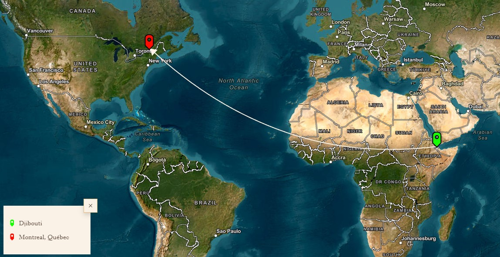
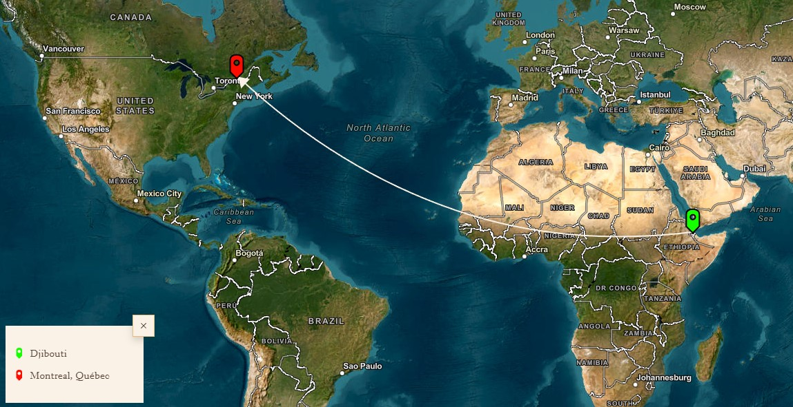

Novel : Passage des larmes
Djibril is a young man who lives in Montréal, where he works for an American economic intelligence company specializing in site scouting. He is sent to his native Djibouti to gather economic and geopolitical information. There, he meticulously examines the country, taking photos and writing reports, only to realize that it is his childhood memories that he is investigating. Djibril lets us hear the threatening, judgmental voice of his Islamist twin brother, imprisoned not far from Djibouti. Faced with these haunting thoughts, Djibril's investigation continues.
Author : Abdourahman A. Waberi
Abdourahman Waberi was born in Djibouti City in 1965. He went to France in 1985 to study English literature. Waberi worked as a literary consultant for Editions Le Serpent à plumes, Paris, and as a literary critic for Le Monde Diplomatique. He has been a member of the International Jury for the Lettre Ulysses Award for the Art of Reportage (Berlin, Germany), 2003 & 2004.
Mapping of the Transatlantic Journey
 
